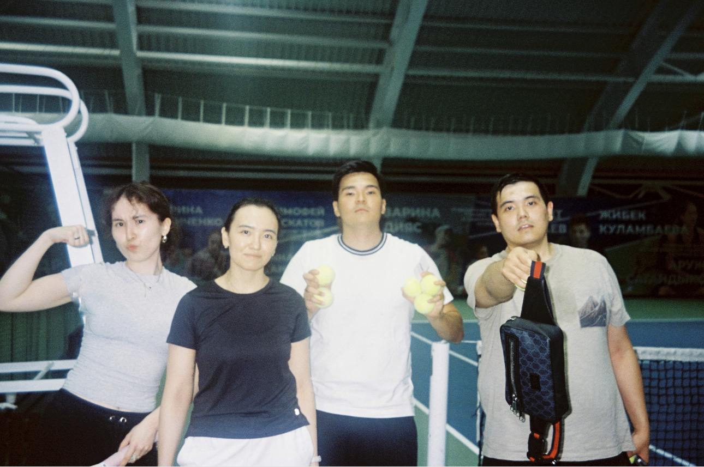

My Love for Sports
Another influence that my parents have had on me, for which I'm beyond grateful, is the habit of physical activity. Ever since childhood, I have played various sports, ranging from ice hockey to rhythmic gymnastics. Sport has become a necessary component of my life, keeping both my physical and mental health in good shape.
Recently, I’ve been particularly into playing tennis with my brothers and sisters. It's not only a great source of physical activity but also an amazing opportunity to spend quality time together as a family.
